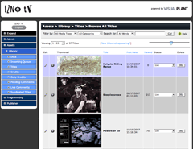
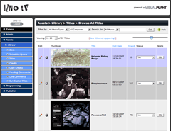

Your content on VISUALPLANT


Protected feeds
Your Internet Apps and Venues
The VISUALPLANT API is based on the most popular data syndication formats: XML, JSON and XSPF.
Some things you can do with the VISUALPLANT Web Services API:
- Customize your Web site to display your media library exactly as you wish.
- Create AJAX, Flash widgets, plugins or apps to display your media content on 3rd-party Web sites, like FaceBook.
- Create iPhone or other mobile apps that allow your users to interact with your content.
- Create a desktop or IPTV applications providing all these features in your own customized environment.
To extend use of your media library to integrate with your existing site or to create highly-customized micro-sites, applications, widgets or FaceBook apps, we provide you with live, granular access to your content to use in ways limited only by your imagination and development skill.
The VISUALPLANT API distributes your content anywhere you choose on the Internet.